1. Pithecellobium dulce or Jungle Jalebi

Tamil Name is "Koduka Puli"
Superb Health Benefits Of The Jungle Jalebi Fruit:
• Promotes Weight Loss.
• Cures Gut Problems.
• Manages Diabetes Symptoms.
• Fortifies Bones And Muscles.
• Boosts Immune Function.
• Promotes Oral Health.
• Relieves Anxiety And Depression.
Video Here
2. Wood Apple(Bael fruit)
.jpg)
Tamil Name is "Vilam or Velanga Pazham"
Benefits Of The Wood Apple(Bael fruit)
• Wood Apple Squash helps easing digestion.
• It also helps in curing chronic respiratory conditions.
• It gives you a boost of energy in summers.
• It is highly recommended for people suffering from kidney disorders.
• It purifies the blood.
Video Here
3. Carissa corandas

Tamil Name is "kalakaai or sottha kalakaai"
Benefits Of The Carissa corandas
• It removes impurities from the Blood.
• It stops Internal Bleeding.
• It alleviates Cough.
• It removes impurities from the Blood.
• It is also used during Stomach Ache.
• It is suggested during Constipation to get relief.
Video Here
4. Bush Passion Fruit

Tamil Name is "poochapazham"
Benefits Of The Bush Passion Fruit
• Maintain healthy bones.
• Prevent Anemia.
• Prevent Cancer.
• Controlling your blood pressure.
• Maintaining healthy gums and teeth.
• Can overcome the Kidney Disorder.
Video Here
5. Jujube Fruit

Tamil Name is "Ilanthai pazham"
Benefits Of The Jujube Fruit
• Helps You Sleep Better.
• Chronic Constipation Relief.
• Soothes Anxiety.
• Rich In Vitamin C.
• Improves Bone Strength.
• Regulates Blood Circulation.
• Regulates Blood Pressure.
Video Here
6. Peepal Fruit

Tamil Name is "Athipazham"
Benefits Of The Peepal Fruit
• Take 5-10 fruits of peepal daily and it will cure the problem of constipation permanently.
• Take half spoon of peepal fruit powder thrice a day with milk . You will get rid of impotency and give strength to the body..
• Peepal fruit can also be taken for cough, pitta, blood-related problems, burning sensation and vomitting etc..
Video Here
7. Guava

Tamil Name is "Koiyapazham"
Benefits Of The Guava
• May Help Lower Blood Sugar Levels.
• May Boost Heart Health.
• May Have an Anticancer Effect.
• May Benefit Your Digestive System.
• May Aid Weight Loss.
• May Help Boost Your Immunity.
• Eating Guavas May Be Good for Your Skin.
Video Here
8. Chikoo
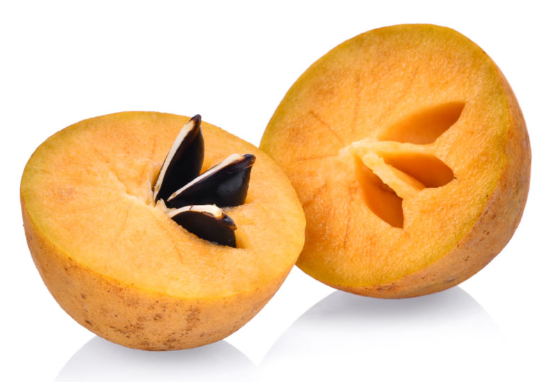Tamil Name is "Sapota"
Benefits Of The Chikoo
• Promotes Gud Health.
• Stronger Bones.
• Bolsters Immunity.
• Boost Energy.
• Healthy Skin.
• Prevents Cancer.
• Controls Blood Pressure.
Video Here
9. Mango
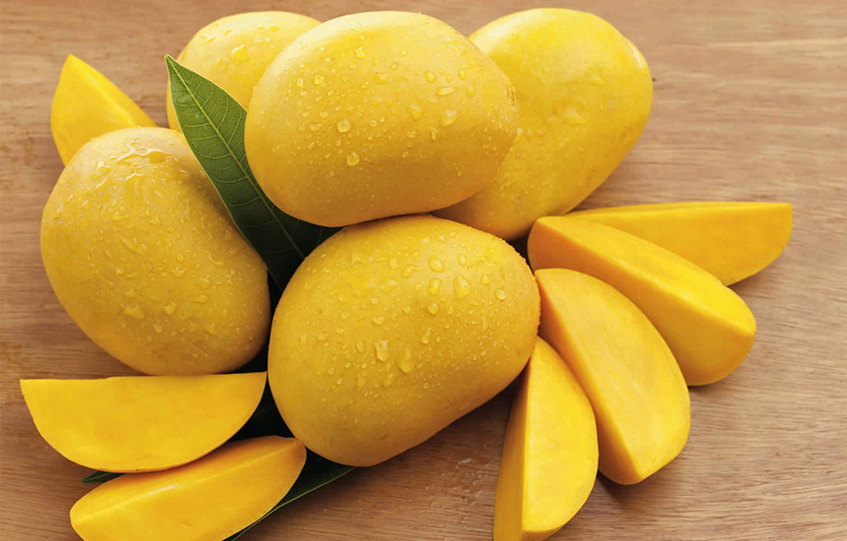Tamil Name is "Maambhazham"
Benefits Of The Mango
• Mango is one of the highest food sources of vitamin C.
• Mango demonstrates some exciting potential when it comes to healthy weight control.
• Mango decreased tumor size and suppressed cancer growth factors..
• Mango consumption has shown impressive results in people with chronic constipation.
Video Here
10. Cherimoya or Custard Apple

Tamil Name is "Sitapazham"
Benefits Of The Cherimoya or Custard Apple
• Cherimoya is loaded with antioxidants, which fight free radicals in your body.
• May have anticancer properties.
• It’s loaded with beneficial nutrients that may support your mood, immunity, and digestion.
• This unique fruit can be a great addition to a nutrient-dense, balanced diet.
Video Here
11. Jamun Plum

Tamil Name is "Naaval Pazham"
Benefits Of The Jamun Plum
• Loaded with vitamin C and iron, jamun increases hemoglobin.
• Due to the antibacterial properties of Jamun fruit juice, it is used for dandruff.
• Bleeding hemorrhoids can be cured by regular consumption of Jamun fruit.
• For treating piles and hemorrhoids, Jamun fruit juice is very effective.
Video Here
12. Banana
Tamil Name is "Vazhai Pazham"
Benefits Of The Banana
• Banana is loaded with fibre, both soluble and insoluble.
• High fibre foods are said to be good for the heart.
• According to Ayurveda, banana has a sweet and sour taste.
• Banana is a heavyweight when it comes to nutrition.
Video Here
13. Grape
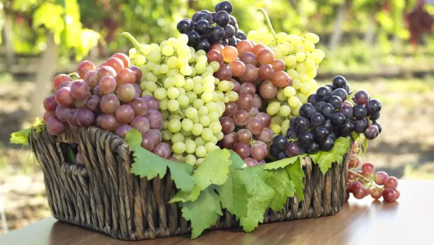Tamil Name is "Dhirachai"
Benefits Of The Grape
• Packed With Nutrients, Especially Vitamins C and K.
• High Antioxidant Contents May Prevent Chronic Diseases.
• Beneficial for Heart Health in Various Impressive Ways
• May Decrease Blood Sugar Levels and Protect Against Diabetes.
Video Here
14. Rampal
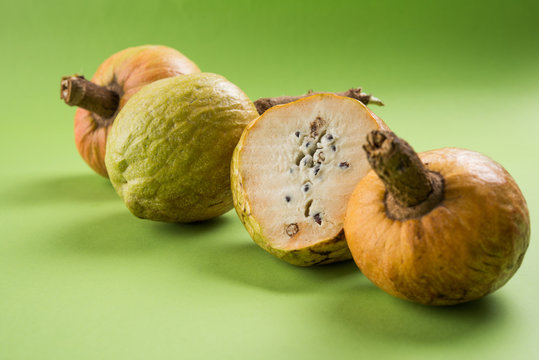Tamil Name is "Ramsita Pazham"
Benefits Of The Rampal
• Ramphal is a remedy for hair loss and acne.
• Ramphal contains elements that reduce blood sugar in the body.
• Ramphal helps treat anaemia as the iron present in it helps produce haemoglobin and transport of oxygen to the body's cells
• Vitamin C and antioxidants contribute to boosting immunity.
Video Here
15. Eacham Pazham
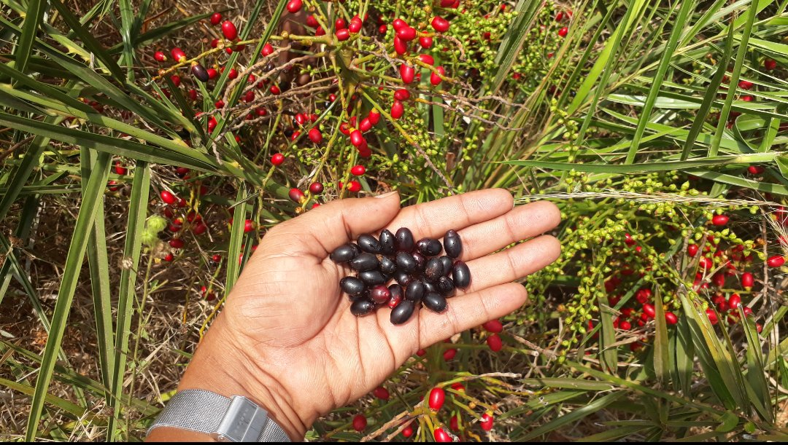Tamil Name is "Eacham Pazham"
Benefits Of The Eacham Pazham
• Oxidation can be very dangerous as it can be very harmful to the structural and genetic integrity of your cells.
• This is an antioxidant that can benefit your body by helping with multiple issues.
• Phenolic acid is a much-discussed antioxidant mainly known for its anti-inflammatory properties.
Video Here
16. Palmrya Fruit
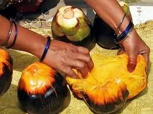Tamil Name is "PanamPazham"
Benefits Of The Palmrya Fruit
• Helps relieve digestive problems
• Helps relieve skin related problems.
• Cools the Body.
• Helps Reduce Weight.
• Heals Migraines.
• Prevention of Diabetes.
• Home Remedy for Many Ailments.
Video Here
17. Star Gooseberry

Tamil Name is "Arai Nelli"
Benefits Of The Star Gooseberry
• Star gooseberry concoctions also act as a liver tonic and blood enrichment remedy.
• Also used to remedy bronchitis, biliousness, and treat digestive disorders such as urinary concretions, diarrhea, and piles.
• Another concoction includes making a leaf poultice with added pepper to treat sciatica and rheumatism.
Video Here
18. Amla
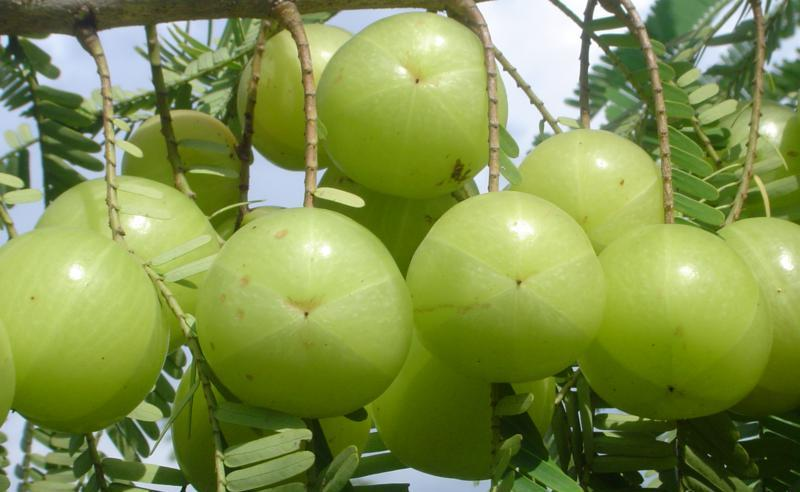Tamil Name is "Kaatu Nellikai"
Benefits Of The Amla
• Promotes immune function.
• Enhances liver health.
• Supports healthy digestion.
• Promotes heart health.
• May increase hair growth.
• Improves kidney health.
Video Here
19. Fig Fruit

Tamil Name is "Athipazham"
Benefits Of The Fig Fruit
• Fiber forms an essential part of our daily diet.
• figs were considered to be a sacred fruit and a natural aphrodisiac.
• The high fiber content in figs helps in maintaining a healthy digestive system, thus also aids in preventing constipation.
• Dried figs are a good source of calcium.
Video Here
20. Kara Fruit

Tamil Name is "Karapazham"
Benefits Of The Kara Fruit
• Promotes immune function.
• May Boost Heart Health.
• May Have an Anticancer Effect.
• May Benefit Your Digestive System.
• Chronic Constipation Relief.
• May Help Boost Your Immunity.
• Eating karapazham May Be Good for Your Skin.
Video Here
21. Lemon
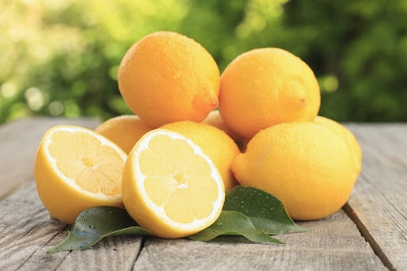Tamil Name is "Elumichai Pazham"
Benefits Of The Lemon
• It promotes hydration.
• It’s a good source of vitamin C.
• It supports weight loss.
• It improves your skin quality.
• It aids digestion.
• It freshens breath.
• It helps prevent kidney stones.
Video Here
22. Ivy Gourd

Tamil Name is "Kovai Pazham"
Benefits Of The Ivy Gourd
• Ivy gourd extract blood sugar.
• Ivy Gourd Prevents Obesity.
• Ivy Gourd for Fatigue.
• Ivy Gourd Defends Nervous System.
• Ivy Gourd Increased Metabolism.
• Ivy Gourd Improved Digestion.
• Ivy gourd for kidney stones.
Video Here
23. Watermelon
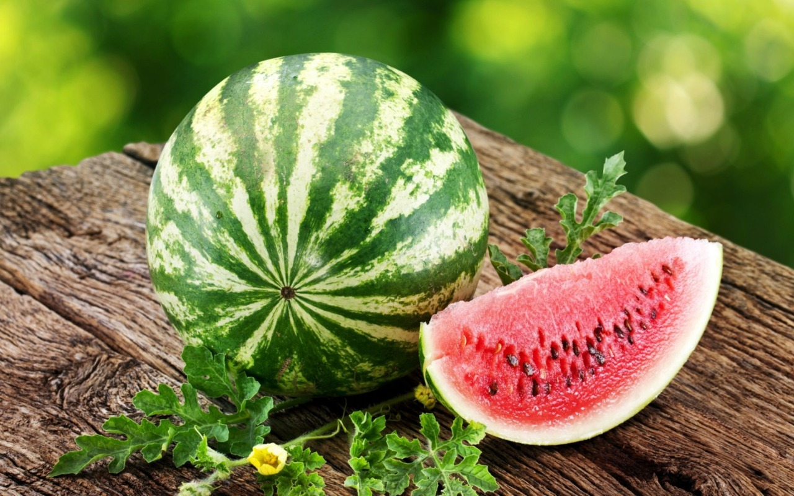Tamil Name is "Dharboosani"
Benefits Of The Watermelon
• Helps You Hydrate.
• Contains Nutrients and Beneficial Plant Compounds.
• Contains Compounds That May Help Prevent Cancer.
• May Improve Heart Health.
• May Lower Inflammation and Oxidative Stress.
Video Here
24. Tamarind
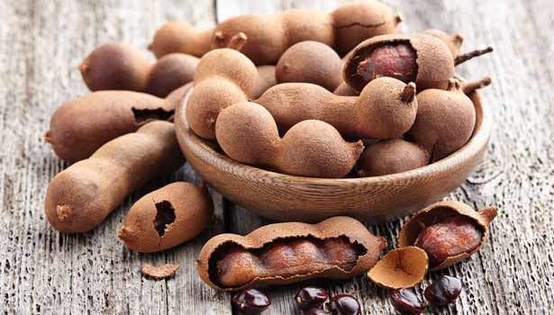Tamil Name is "Puliyampazham"
Benefits Of The Tamarind
• Its Antioxidants May Boost Heart Health.
• It’s High in Beneficial Magnesium.
• It May Have Anti-fungal, Antiviral and Antibacterial Effects.
• These can protect against diseases such as heart disease, cancer and diabetes.
• Tamarind is rich in a number of essential nutrients.
Video Here
25. Carambola or Star Fruit
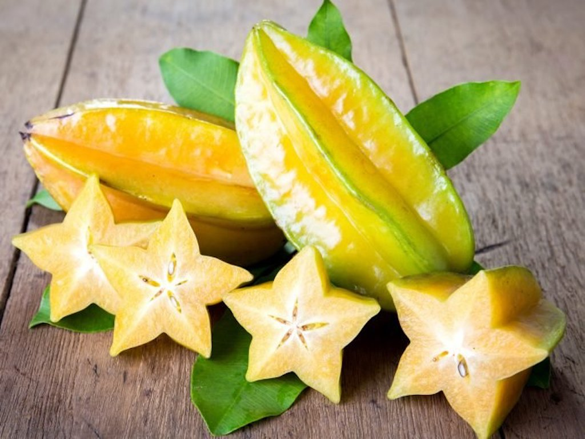Tamil Name is "Arjuna Pazham"
Benefits Of The Carambola/Star Fruit
• Carambola fruit is loaded with dietary fibre that helps in flushing out fat and cholesterol.
• Star fruit is one of the preferred choices of fruit for all dieters as it is low in calories and dense in fibre.
• People with kidney problems should consult the doctor before consuming the fruit.